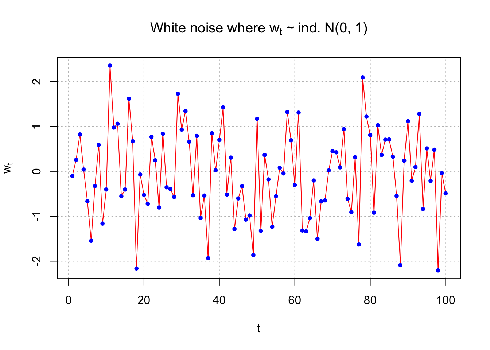
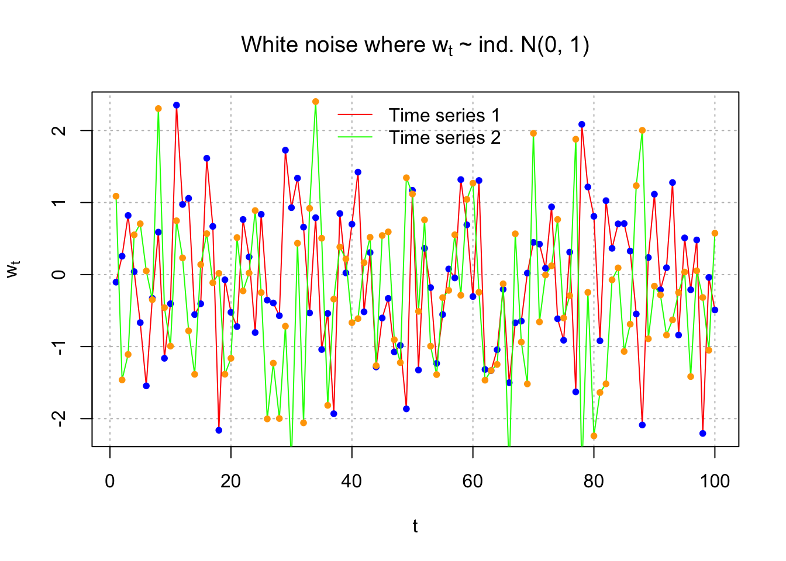
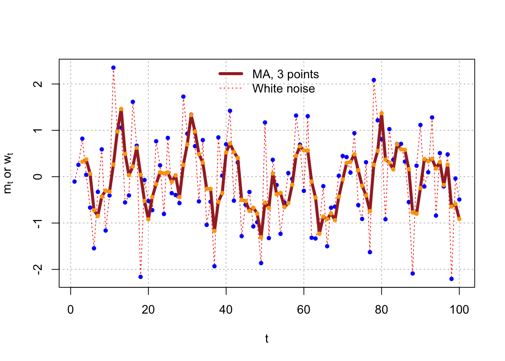
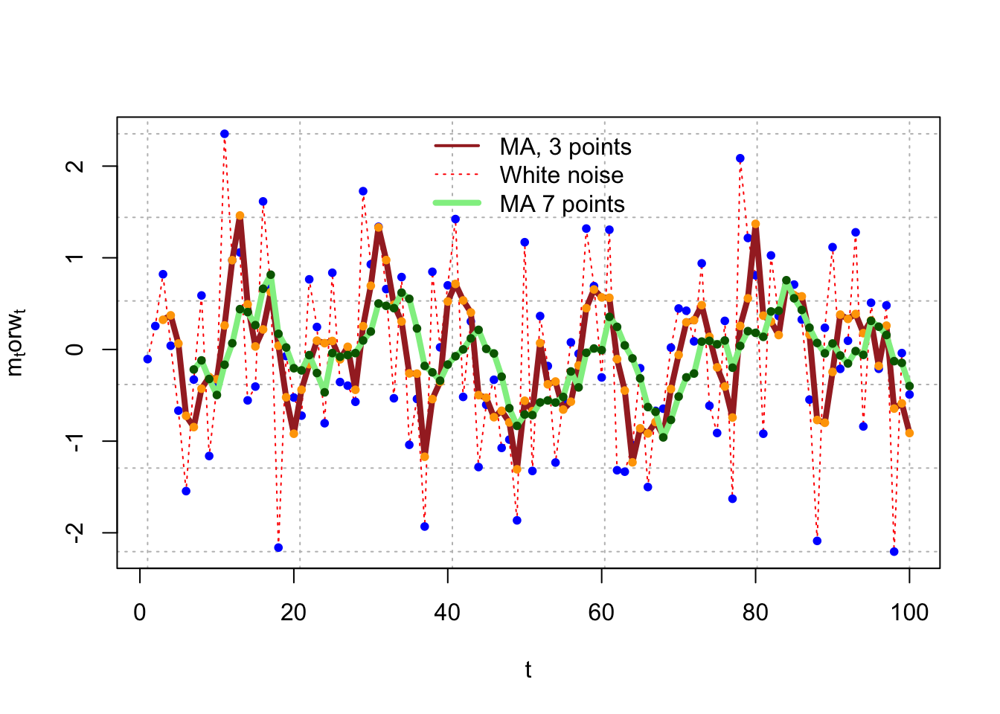
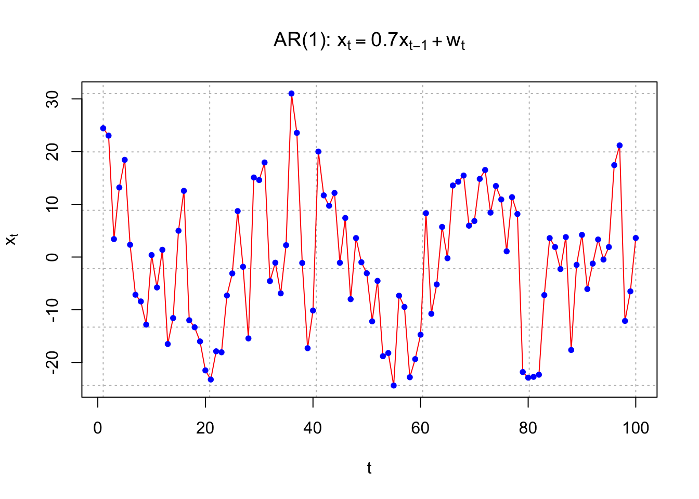

Chapter 4 Basic Model
In this chapter, we will go introduce some basic Time Series model. Hopefully, we can discuss them in details in the following chapters.
Definition 4.1 Stochastic process
Stochastic process is a collection of random variables \(\{X_t\}\) indexed by t.
Time Series is a collection of random vatiables indexed according to the order they are obtained in time.
A realization of the stochastic process is the observed values.
4.1 White Noise
Example 4.1 White Noise
\(W_t\sim \mathrm{i.i.d.} (0,\sigma^2) , \forall t=1,...,n\)
usually, we assume normal distribution, i.e.,
\(W_t\sim \mathrm{i.i.d.} N(0,\sigma^2) , \forall t=1,...,n\)
set.seed(8128)
w <- rnorm(n = 100, mean = 0, sd = 1)
head(w)
#> [1] -0.10528941 0.25548490 0.82065388 0.04070997
#> [5] -0.66722880 -1.54502793
dev.new(width = 6, height = 6, pointsize = 10)
# we did not specify y-axis here
# note that we use expression() to type math expression
plot(x = w, ylab = expression(w[t]), xlab = "t", type
= "o", col = "red", main = expression(paste("White
noise where ", w[t], " ~ ind. N(0, 1)")),
panel.first = grid(col = "gray", lty = "dotted"))
#> Warning in title(...): font metrics unknown for character
#> 0xa
#> Warning in title(...): font metrics unknown for character
#> 0xa#Advantage of second plot is separate control over color of points
plot(x = w, ylab = expression(w[t]), xlab = "t", type =
"l", col = "red", main = expression(paste("White noise where ", w[t], " ~ ind. N(0, 1)")),
panel.first = grid(col = "gray", lty = "dotted"))
points(x = w, pch = 20, col = "blue")
Suppose another white noise process is simulated. Below is a plot overlaying the two time series.
set.seed(1298)
w.new <- rnorm(n = 100, mean = 0, sd = 1)
head(w.new)
#> [1] 1.08820292 -1.46217413 -1.10887422 0.55156914
#> [5] 0.70582813 0.05079594par(mfrow=c(1,1))
plot(x = w,
ylab = expression(w[t]), xlab = "t",
type = "l", col = "red",
main = expression(paste("White noise where ", w[t], " ~ ind. N(0, 1)")),
panel.first = grid(col = "gray", lty = "dotted"))
points(x = w, pch = 20, col = "blue")
lines(x = w.new, col = "green")
points(x = w.new, pch = 20,col = "orange")
legend(x ="top",legend=c("Time series 1", "Time series 2"), lty=c(1,1), col=c("red", "green"),
bty="n")
We could also plot the two time series separately.
dev.new(width = 8, height = 6, pointsize = 10) #Open a new plot window
#make frame by row 2 rows 1 cols
par(mfrow = c(2,1))
plot(x = w, ylab = expression(w[t]), xlab = "t", type =
"l", col = "red", main = expression(paste("White noise where ", w[t], "~N(0, 1)")), panel.first =
grid(col = "gray", lty = "dotted"))
points(x = w, pch = 20, col = "blue")
plot(x = w.new, ylab = expression(w.new[t]), xlab =
"t", type = "l", col = "green", main =
expression(paste("White noise where ", w[t], " ~ ind.N(0, 1)")), panel.first=grid(col = "gray", lty =
"dotted"))
points(x = w.new, pch = 20, col = "orange")# What if used plot.ts()?
dev.new(width = 8, height = 6, pointsize = 10) #Open a new plot window
plot.ts(x = cbind(w, w.new), ylab = expression(w[t]), xlab = "t", type = "o", col = "red", main = expression(paste("White noise where ", w[t], " ~ ind. N(0, 1)")), panel.first=grid(col = "gray", lty = "dotted"))
#Problem: gridlines do not extend to second plot
plot.ts(x = cbind(w, w.new), ylab = expression(w[t]), xlab = "t", type = "o", col = "red", main = expression(paste("White noise where ", w[t], " ~ ind. N(0, 1)")))
grid(col = "gray", lty = "dotted")
#Problem: gridlines do not appear correctly on plots (could fix by specifying where to draw them using abline)4.2 Moving Average
Example 4.2 Moving Average of White Noise
The previous time series had no correlation between the observations. One way to induce correlation is to create a “moving average” of the observations. This will have an effect of “smoothing” the series.
Let \(m_t = \frac{w_t+w_{t-1}+w_{t-2}}{3}\). This can be done in R using the following code:
set.seed(8128)
w <- rnorm(n=100,mean=0, sd=1)
head(w)
#> [1] -0.10528941 0.25548490 0.82065388 0.04070997
#> [5] -0.66722880 -1.54502793dev.new(width = 8, height = 6, pointsize = 10) #Open a new plot window
plot(x = w, ylab = expression(paste(m[t], " or ", w[t])), xlab = "t", type = "l", col = "red",
panel.first = grid(col = "gray", lty = "dotted"), lty = "dotted")
points(x = w, pch = 20, col = "blue")# rep(1/3,3) repeats 1/3 3 times
# we can use filter() to generate moveing average
# filter() help us build linear combination of elts of w
# filter= linear combination coef
# convolution for moving average
# sides=1，表示只使用輸入向量的左側。
m <- filter(w, filter = rep(1/3, 3), method="convolution", sides=1)
head(m)
#> [1] NA NA 0.32361646 0.37228292
#> [5] 0.06471168 -0.72384892
tail(m)
#> [1] 0.3158762 -0.1803096 0.2598066 -0.6450531 -0.5879723
#> [6] -0.9120182(w[1]+w[2]+w[3])/3
#> [1] 0.3236165
(w[98]+w[99]+w[100])/3
#> [1] -0.9120182plot(x = w, ylab = expression(paste(m[t], " or ", w[t])),
xlab = "t", type = "l", col = "red", panel.first =
grid(col = "gray", lty = "dotted"), lty = "dotted")
points(x = w, pch = 20, col = "blue")
lines(x = m, col = "brown", lty = "solid", lwd = 4)
points(x = m, pch = 20, col = "orange")
legend(x = "top", legend = c("MA, 3 points", "White noise"), lty = c("solid", "dotted"), col=c("brown",
"red"), lwd = c(4,1), bty = "n")
The plot below shows a 7-point moving average.
m7 <- filter(x=w, filter=rep(x=1/7, times=7),method="convolution", sides=1)
plot(x=w, ylab=expression(paste(m[t],"or",w[t])), xlab="t",type="l",col="red",panel_filter=grid(col="gray",lty="dotted"), lty="dotted")
points(x=w, pch=20, col="blue")
lines(x=m, col="brown", lty="solid",lwd=4)
points(x=m, pch=20, col="orange")
lines(x = m7, col = "lightgreen", lty = "solid", lwd = 4)
points(x = m7, pch = 20, col = "darkgreen")
legend(x = "top", legend = c("MA, 3 points", "White noise", "MA 7 points"),
lty = c("solid", "dotted", "solid"), col = c("brown", "red", "lightgreen"),
lwd = c(2,1,4), bty="n")
4.3 Autoregression
Example 4.3 Autoregression
An autoregression model uses past observations to predict future observations in a regression model.
Suppose the autoregression model is
\(x_t = 0.7x_{t-1} + w_t, w_t \sim \mathrm{i.i.d.} N(0,1) ,\forall t = 1, …, n\)
Because there is one past period on the right hand side, this is often denoted as an AR(1) model
Obviously, there will be a correlation between the random variables.
set.seed(6381) #Different seed from white_noise.R
w <- rnorm(n = 200, mean = 0, sd = 1)
head(w)
#> [1] 0.06737166 -0.68095839 0.78930605 0.60049855
#> [5] -1.21297680 -1.14082872#Simple way to simulate AR(1) data
x <- numeric(length = 200)
x.1 <- 0
for(i in 1:length(x)) {
x[i] <- 0.7*x.1 + w[i]
x.1 <- x[i]
}head(data.frame(x, w))
#> x w
#> 1 0.06737166 0.06737166
#> 2 -0.63379823 -0.68095839
#> 3 0.34564730 0.78930605
#> 4 0.84245166 0.60049855
#> 5 -0.62326064 -1.21297680
#> 6 -1.57711117 -1.14082872#Do not use first 100
x <- x[101:200]dev.new(width = 8, height = 6, pointsize = 10) #Opens up wider plot window than the default (good for time series plots)
plot(x = x, ylab = expression(x[t]), xlab = "t", type =
"l", col = c("red"), lwd = 1 , main =
expression(paste("AR(1): ", x[t] == 0.7*x[t-1] +
w[t])), panel.first = grid(col = "gray", lty =
"dotted"))
points(x = x, pch = 20, col = "blue") #Show first few observations after removal of first 100
head(data.frame(c(NA, NA, x), w[99:200]))
#> c.NA..NA..x. w.99.200.
#> 1 NA 0.3918531
#> 2 NA -0.1980565
#> 3 1.429572 0.7508375
#> 4 -1.878239 -2.8789389
#> 5 -1.470250 -0.1554829
#> 6 -3.464078 -2.4349033
#Correlation between x_t and x_t-1
cor(x[2:100], x[1:99])
#> [1] 0.7270483Here is an easier way to simulate observations from an AR(1). Note that this uses an Autoregressive Integrated Moving Average (ARIMA) structure that we will discuss later in the course. In this case, I use \(\sigma_w\)= 10.
set.seed(7181)
x <- arima.sim(model = list(ar = c(0.7)), n = 100,
rand.gen = rnorm, sd = 10)
plot(x = x, ylab = expression(x[t]), xlab = "t", type =
"l", col = "red", lwd = 1 ,main =
expression(paste("AR(1): ", x[t] == 0.7*x[t-1] +
w[t])), panel.first=grid(col = "gray", lty =
"dotted"))
points(x = x, pch = 20, col = "blue")